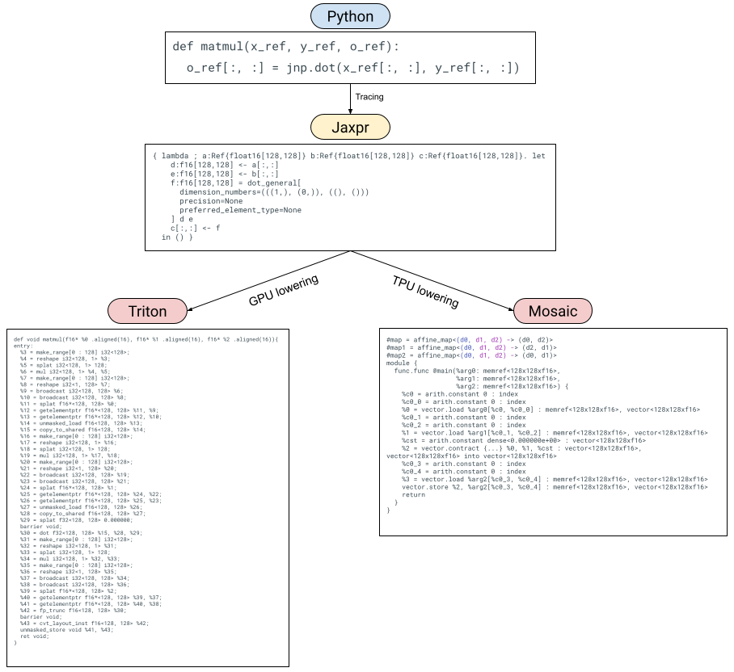

Pallas Design#
In this document, we explain the initial Pallas design. This is a snapshot of some of the earlier design decisions made and Pallas’s specific APIs might have changed since.
Introduction#
JAX is being used for a diverse set of workloads, from large scale machine learning to scientific computing. JAX’s success story is as much a success story for XLA, the primary compiler that JAX targets – XLA compiles JAX programs for accelerators and has enabled JAX to scale to the largest ML models. JAX describes logical computations in XLA’s representation, HLO. HLO describes how computations happen logically but not physically. Given a logical HLO computation, XLA decides how that computation is to be executed physically. For a wide variety of ML applications, XLA does a good job of compiling user programs but inevitably some users hit XLA’s limitations. In these cases, we need to provide an “escape hatch” to allow experts to write hand-tuned kernels that outperform XLA at that point in time. Furthermore, advances in ML systems research take some time to be incorporated into XLA and users often want to run ahead with them. Over time, the compiler can incorporate the optimizations that were proven out experimentally through hand-tuned kernels.
XLA does offer the CustomCall mechanism as an escape hatch, but it
requires users to write C++ and on GPU it requires users to learn the
CUDA programming model.
The CUDA programming model is arguably too low-level for many machine
learning GPU kernels, like matrix multiplication,
and even expert users will have trouble using CUDA to implement efficient
matrix multiplication or multi-headed attention.
Not only this, JAX users are usually familiar with Python and NumPy-style
array programming which doesn’t involve writing any C++ or thinking about
GPU parallelism.
All popular machine learning frameworks share this
idea: manipulating (usually) arrays with high level operations
like matmul or convolution.
Unfortunately, this means implementing a custom operation via CustomCall
is a big investment, involving potentially learning C++ and/or GPU
programming.
Triton, a GPU compiler built
and maintained by OpenAI, has taken the ML compiler world by storm.
Triton offers the best of both worlds: an array-based programming model
for GPU kernels. Triton is the primary code generation route
for torch.compile in PyTorch 2.0, via the Torch Inductor library.
Triton actively hides some aspects of GPU programming in the name of a
more accessible programming model that can be used from Python and to
generate optimized code from a higher-level representation.
While GPUs are more flexible than what Triton offers, in the ML domain,
Triton seems to be expressive enough for many applications.
In this document, we describe Pallas, an extension to JAX that enables kernel programming for both GPUs and TPUs using a Triton-like model. A JAX-based kernel language offers several advantages:
Although Triton exposes a TPU-like programming model to users, i.e. writing programs for tiles of arrays in L1-cache, it is specialized enough to GPU that we cannot directly compile Triton for TPU. For example, Triton offers atomic operations specifically meant to handle parallel writes that don’t necessarily make sense on TPU. A higher level front end can abstract away details of the platform while surfacing just that tile-based programming model. The kernels will thus be portable across different hardware platforms.
JAX as a tracing-based frontend for numerical computing is both mature and well-used. By embedding the kernel programming language in JAX itself, we can reuse JAX’s tracing infrastructure and provide a NumPy-like frontend that’s already familiar to users.
JAX transformations are key to its success, allowing users to express simple programs but transform them to achieve complex functionality. We can leverage the same transformations (vmap, jvp, etc.) to transform user-written kernels.
The open question is: is JAX a good fit for a kernel language at all? We think so. Triton demonstrates that an array programming language can be practical for writing GPU kernels and JAX is just that. JAX has also proven to be a flexible front-end for compilers and for program transformations.
We describe Pallas as follows: we first describe the ways in which we extend JAX to support writing custom kernels. We then show how we can lower Pallas to both Triton and Mosaic. We conclude by describing existing and potential ways to transform Pallas kernels via JAX transformations.
 Visualization of Pallas lowering paths
Pallas: Extending JAX for kernels#
The key point we’d like to make is that Pallas is just JAX, with some extensions:
Users now use reference types called
Refs in their JAX code. This gives users more precise control over memory access and layout in JAX will more closely resemble physical layout.Users write their JAX programs using a subset of JAX primitives, along with a set of Pallas-specific primitives.
Users embed their Pallas kernels in an outer JAX program via a special
pallas_callhigher-order function, that executes the kernel in a map. It is analogous topmaporshard_map, except with references to shared memory.
We’ll go over these three extensions one at a time, by example.
Note that these APIs are still experimental and subject to change.
Reference types#
Let’s look at an example Pallas program for adding two vectors:
import jax
import jax.numpy as jnp
from jax.experimental import pallas as pl
def add_kernel(x_ref, y_ref, o_ref):
# In this code, `x_ref`, `y_ref` and `o_ref` are (8,)-shaped `Ref`s
x = x_ref[:]
y = y_ref[:]
o_ref[:] = x + y
x, y = jnp.arange(8), jnp.arange(8, 16)
add = pl.pallas_call(add_kernel, out_shape=jax.ShapeDtypeStruct((8,), jnp.int32))
add(x, y)
Unlike a regular JAX program, add_kernel does not receive immutable
array arguments.
Instead, it’s provided with references that can be read from and
updated in-place using NumPy-like syntax.
Refs are not a Pallas-specific concept – they were introduced to
JAX to represent stateful computations.
However, we can leverage them when writing kernels that operate on
mutable memory too.
Pallas kernels not only receive Refs corresponding to the inputs
to the kernel, but also receive Refs for the outputs as well
(specified in pallas_call via out_shape).
Refs are special types that cannot be passed into the usual set of
JAX primitives without being read from first.
When you read from a Ref you get a JAX Array type out, and you
must write an Array into a Ref.
Reading from/writing into Refs#
Reading from a Ref corresponds to loading an array into the
lowest level of the memory hierarchy (L1-cache on GPU and vector
registers on TPU). Writing into a Ref is analogous.
def f(x_ref, o_ref):
# Using vanilla Python indexing
x = x_ref[0, 2:5, :]
# Or via Numpy advanced int indexing
o_ref[jnp.arange(3), :] = x
# Note that in order to use NumPy advanced int indexing, you need to broadcast the indices against each other into the desired multidimensional shape:
def f(x_ref):
# Assume x_ref is (8, 4) and we want to read out a (2, 3) slice
x = x_ref[jnp.arange(2)[..., None], jnp.arange(3)[None, ...]]
Writing to Refs can be done via analogous __setitem__ style
indexing.
Other forms of indexing (for example, dynamic slicing) can be done
via pallas.load and pallas.store, new JAX primitives designed to
make loading from/storing into memory easier.
We’ll discuss these new primitives later.
Extending JAX with new Pallas primitives#
Because JAX was designed with HLO in mind, the set of JAX primitives closely mirrors the set of HLO operations. Targeting a new compiler (e.g. Triton or Mosaic) means we might need to supplement JAX’s primitives with new ones specific to the new compiler. At the same time, we may not be able to lower all JAX primitives, so we need to restrict it to a subset.
Because Pallas was initially designed with Triton in mind, we offer a set of new primitives targeting the Triton programming model. As we’ll show later, we can lower these primitives to Mosaic as well.
pallas.load and pallas.store#
pallas.load and pallas.store are primitives that allow loading
from memory and storing into memory.
Unlike __getitem__ and __setitem__ they are more flexible at the
cost of being more verbose.
Specifically, you can use the pallas.dynamic_slice (pallas.ds for
short) construct (which should maybe be upstreamed into JAX to be
used with Ref __getitem__ and __setitem__).
def f(x_ref, o_ref):
# Reading from memory via pallas.load
x = pl.load(x_ref, (0, slice(2, 5), slice(None)))
# Using integer indexing automatically broadcasts
x = pl.load(x_ref, (0, 2 + jnp.arange(3), slice(None)))
# You can also use `pl.dynamic_slice` (`pl.ds` for short) objects as well
pl.store(o_ref, (0, pl.ds(start=2, size=3), slice(None)), x)
pallas.load and pallas.store also support masking via the mask
argument.
def f(x_ref, o_ref):
# Reading from memory via pallas.load
idx = jnp.arange(8)
mask = idx < 5
x = pl.load(x_ref, (idx,), mask=mask, other=float('-inf'))
Masking is important when doing out-of-bounds loads/stores. The operational semantics of masking can be compiler-determined (if we understand the documentation properly, Triton avoids the read from/write to memory if it’s masked).
pallas.program_id and pallas.num_programs#
As we’ll soon see, we’ll be executing the same Pallas kernels many times (either in parallel or in a pipeline depending on the backend). These new primitives tell us “where” we are in the execution of the kernel.
pallas.program_id takes in an axis argument, which tells us which
index in an axis of a multidimensional grid this kernel is currently
executing in (analogous to threadId from CUDA programming or
lax.axis_index in jax.pmap).
Note that we are currently borrowing the “program” terminology from
Triton and in the future we might want to change it to something more
familiar to JAX users.
def f(x_ref, o_ref):
i = pl.program_id(axis=0) # execution index in the first axis of the grid
o_ref[i] = jnp.exp(x_ref[i])
pallas.num_programs also takes in an axis and returns the grid size
for that axis.
Note that while program_id and num_programs are Triton-specific
terminology they are easily generalized to make sense on TPU as well.
Using a subset of JAX primitives in Pallas#
Because we’re writing kernels, not high-level HLO programs, some JAX primitives may not be able to be represented in our underlying substrate efficiently. However, we know we can support most elementwise operations, simple dot products, and JAX control flow.
While we haven’t yet mapped out exactly all the JAX primitives that we can support in Pallas kernels, we can certainly identify some that are not easy to lower or are unlikely to be useful:
conv_general- convolution usually isn’t offered as primitive in the underlying hardware.gather/scatter- the underlying compiler may not support noncontiguous memory reads and writes
Executing Pallas kernels with pallas_call#
Now that we’ve written our Pallas kernels (a.k.a. JAX with Refs and
the extra Pallas primitives), how do we execute them on a GPU or TPU?
We use pallas_call, a higher order function (akin to jax.jit and
jax.pmap) that executes the kernel.
The signature of pallas_call is as follows:
def pallas_call(
kernel: Callable,
out_shape: Sequence[jax.ShapeDtypeStruct],
*,
in_specs: Sequence[Spec],
out_specs: Sequence[Spec],
grid: Optional[Tuple[int, ...]] = None) -> Callable:
...
When we provide a kernel to pallas_call we provide additional
information. The first is out_shape which tells the kernel what the
outputs look like (pallas_call will pass a Ref corresponding to
these into the kernel to be written to).
The rest of the information (in_specs, out_specs, and grid) are
information about how the kernel will be scheduled on the accelerator.
The (rough) semantics for pallas_call are as follows:
def pallas_call(kernel, out_shape, *, in_specs, out_specs, grid):
def execute(*args):
outputs = map(empty_ref, out_shape)
grid_indices = map(range, grid)
for indices in itertools.product(*grid_indices): # Could run in parallel!
local_inputs = [in_spec.transform(arg, indices) for arg, in_spec in
zip(args, in_specs)]
local_outputs = [out_spec.transform(arg, indices) for arg, out_spec in
zip(outputs, out_specs)]
kernel(*local_inputs, *local_outputs) # writes to outputs
return execute
Specifically, pallas_call will “loop” over grid iteration space,
applying a transformation to the inputs and outputs specified via
the in_specs and out_specs.
In each iteration, the kernel will be called on the transformed
inputs and outputs. Note that the “loop” over the iteration space
could be executed in parallel (e.g. on GPU).
pallas_call also provides no guarantees on the order of loop
iterations over the iteration space, just that every member of the
iteration space will be looped over.
Compilers like Triton and Mosaic will have more specific operational
semantics associated with the grid.
Transformation functions#
The in_specs and out_specs arguments to pallas_call allow
inputs and outputs to be transformed in some way.
The two options that Pallas offers right now are an identity
transformation (where inputs and outputs are left unchanged),
and BlockSpecs, take fixed-size slices of Refs determined by the
loop index.
A BlockSpec takes an index_map function and a block_shape.
Logically, it takes an array and slices it along each axis into
block_shape sizes blocks.
The index_map function takes loop indices (from the grid index set)
and maps them to block indices.
The transform function converts Refs into logical views of the
Ref at the corresponding block.
When we specify None in an entry in block_shape,
that corresponds to “mapping” over that dimension,
removing it from the block within the kernel.
class BlockSpec:
index_map: Callable[[Tuple[Int, ...]], Tuple[Int, ...]]
block_shape: Tuple[Optional[int], ...]
def transform(self, ref, *loop_indices):
block_indices = self.transform_function(loop_indices)
# Returns a view of `ref` starting at `block_indices` of shape self.block_shape
...
We could also imagine other Specs that are used with pallas_call,
for example a Spec that corresponds to overlapping windows to, say,
implement convolutions.
Immediate benefits of Pallas as a front-end#
By offering a JAX front-end for kernel writing, we can immediately reap some benefits.
More flexible front end#
The first is that JAX users are already accustomed to the benefits (and limitations) of programming with JAX and its tracing-based transformations. This means users can use closures and other familiar Python constructs when writing Pallas kernels. This is unlike the existing AST-parsing-based Triton front end or the MLIR builders for Mosaic. For example, this makes Pallas far more amenable to templating than Triton.
See this example of how we can use higher-order functions in Python to template a kernel.
def make_kernel(eltwise_kernel):
def add(x_ref, y_ref, o_ref):
x = pl.load(x_ref, ())
y = pl.load(y_ref, ())
pl.store(o_ref, (), eltwise_kernel(x + y))
return add
kernel1 = make_kernel(lambda x: x * 2)
kernel2 = make_kernel(jnp.exp)
pl.pallas_call(kernel1, out_shape=x, grid=1)(1., 1.)
pl.pallas_call(kernel2, out_shape=x, grid=1)(1., 1.)
Emulation mode#
By representing kernels as programs with JAX primitives and some new
Pallas primitives, we can also lower Pallas programs to StableHLO
directly and compile/execute them with XLA.
Specifically, a pallas_call can be implemented as a lax.scan over
the grid.
This enables us to develop GPU or TPU kernels on any XLA-supported
platform (even CPU!) and debug them using JAX/XLA debugging tools
(like jax.debug.print).
We can also use the more reliable and better tested XLA numerics to
verify the correctness of the Triton and Mosaic compilers.
One could also imagine perturbing the scan ordering to simulate the
parallel reads and writes that happen on GPU.
GPU Examples#
Note all the following examples are for GPU only. They will require tweaks to the block sizes to work on TPUs.
add#
We modify our add_kernel example to operate over (2,)-sized blocks
using BlockSpecs.
def add_kernel(x_ref, y_ref, o_ref):
# In this code, `x_ref`, `y_ref` and `o_ref` are (2,)-shaped `Ref`s
x = x_ref[:]
y = y_ref[:]
o_ref[:] = x + y
x, y = jnp.arange(8), jnp.arange(8, 16)
add = pl.pallas_call(
add_kernel,
out_shape=jax.ShapeDtypeStruct((8,), jnp.int32),
in_specs=[
pl.BlockSpec((2,), lambda i: i),
pl.BlockSpec((2,), lambda i: i)
],
out_specs=pl.BlockSpec((2,), lambda i: i),
grid=(4,))
add(x, y)
Templated matmul#
In this example, we compute tiles of the output by doing an unrolled accumulation over blocks of rows and columns from our input arrays. We inline an activation function into the body of the kernel using a higher order function so we can emit a fused kernel.
def matmul_kernel(x_ref, y_ref, o_ref, *, activation, block_k):
acc = jnp.zeros((x_ref.shape[0], y_ref.shape[1]), jnp.float32)
for k in range(x_ref.shape[1] // block_k):
x = x_ref[:, k*block_k:(k+1)*block_k]
y = y_ref[k*block_k:(k+1)*block_k, :]
acc += x @ y
o_ref[:, :] = activation(acc).astype(o_ref.dtype)
x, y = jnp.ones((512, 256)), jnp.ones((256, 1024))
block_shape = 128, 256, 128
@partial(jax.jit, static_argnames=["block_shape", "activation"])
def matmul(x, y, *, block_shape, activation):
block_m, block_n, block_k = block_shape
fused_matmul = pl.pallas_call(
partial(matmul_kernel, block_k=block_k, activation=activation),
out_shape=jax.ShapeDtypeStruct((x.shape[0], y.shape[1],), jnp.float32),
in_specs=[
pl.BlockSpec((block_m, x.shape[1]), lambda i, j: (i, 0)),
pl.BlockSpec((y.shape[0], block_n), lambda i, j: (0, j))
],
out_specs=pl.BlockSpec((block_m, block_n), lambda i, j: (i, j)),
grid=(4, 4),
)
return fused_matmul(x, y)
z = matmul(x, y, block_shape=block_shape, activation=jax.nn.gelu)
Lowering Pallas#
After users express their Pallas kernels, we lower them to different representations depending on the target backend. On GPUs, we lower Pallas to Triton IR, and on TPU we lower Pallas to Mosaic.
Lowering Pallas to Triton for GPU#
Lowering Pallas to Triton is easy because Pallas was designed with
Triton as a target language in mind.
The main differences between Pallas and Triton is that Triton doesn’t
have a notion of BlockSpecs and also uses pointers when doing
memory loads and stores as opposed to indices.
Triton supports pointers as an array element type in its language
and in Triton you can load from and store to arrays of pointers.
In Pallas, when given a (4, 5)-shaped Ref, x_ref, and then do
like x_ref[3, 2], we need to lower this to computing a Triton
pointer to the appropriate row-major position in x_ref (that is,
doing 5 * 3 + 2 * 1).
Similarly, when we lower slices to Triton, e.g. x_ref[4, :] we need
to produce an array of pointers 5 * 4 + jnp.arange(3).
Other than that, lowering to Triton is fairly straightforward. JAX dot products can be lowered to Triton dot products and JAX unary primitives are lowered to their Triton equivalents. Triton’s atomic operations are lowered via new Pallas atomic primitives.
Lowering Pallas to Mosaic for TPU#
Mosaic consumes (mostly) standard dialect MLIR and emits LLO to be
compiled for TPU.
Pallas can be lowered to Mosaic via translating JAX primitives to
MLIR (mostly the vector and arith dialects).
The BlockSpecs can be converted into pipeline schedules
(i.e. the transform_funcs in Mosaic).
Transforming Pallas#
A natural question is how do JAX transformations interact with Pallas kernels? There are two main ways: transformations inside Pallas kernels and transformations outside Pallas kernels.
Transformation inside Pallas kernels should actually “just work”,
so long as we are able to lower the transformed code.
For example, we could use jax.grad(jnp.sin)(...) inside of a JAX
kernel because we can lower a cos to both Triton and Mosaic.
However, we might not be able to lower a jax.vmap(lax.dynamic_slice)
because it could turn into a gather that we cannot lower.
Transformations of Pallas kernels from the outer JAX programs is
perhaps the more interesting case. How do we handle things like
vmap(pallas_call) and grad(pallas_call)?
vmap-of-pallas_call#
vmap automatically vectorizes JAX programs. While kernel writers might
want precise control over how a batched kernel will behave differently
from its unbatched variant, we can offer a reasonable default vmap
rule for pallas_call while offering the jax.custom_vmap
customization mechanism. When pallas_call is vmap-ed, we augment
the pallas_call to have an extra grid dimension corresponding to the
new batch dimension and transform the BlockSpecs to handle indexing
along that dimension.
grad-of-pallas_call#
grad of pallas_call enables automatic differentiation of kernels.
jax.grad breaks down into applications of three distinct transforms:
jvp, partial_eval and transpose.
In principle, we can reuse most of JAX’s infrastructure when
implementing these rules for pallas_call (since it behaves much like
existing JAX higher order primitives).
However, automatic differentiation of kernels can result in a performance hit due to how memory access is transposed. If we write a GPU kernel with overlapping-and-parallel reads and disjoint-but-parallel writes, we automatically transpose it into a kernel that has overlapping-but-parallel writes (which are slow when done atomically) and disjoint-and-parallel reads. To emit a kernel that better uses parallelism with shared memory, we would need to reorder loops and change how the kernel is vectorized. Unfortunately, we do not have a program representation amenable to that in Pallas. A potential direction to automatically differentiating kernels efficiently is to explore a different representation, perhaps one like that in Dex. We could also look at how Enzyme approaches this problem. However, AD of Pallas kernels may still be useful for a class of kernels that does transpose efficiently (for example elementwise kernels).
In general, though, jax.custom_vjp is a viable escape hatch to
express Pallas kernels that work with jax.grad.
Other transformations#
We could imagine other JAX transformations applying to Pallas kernels
that we haven’t explicitly explored yet.
For example, checkify is a JAX transformation that does functional
error handling.
We could imagine using checkify with pallas_call to allow plumbing
out error codes from GPU kernels that indicate if OOB access or NaNs
were produced.
Another potential transformation to integrate with is custom_partitioning to enable automatically partitionable kernels to be used with pjit.